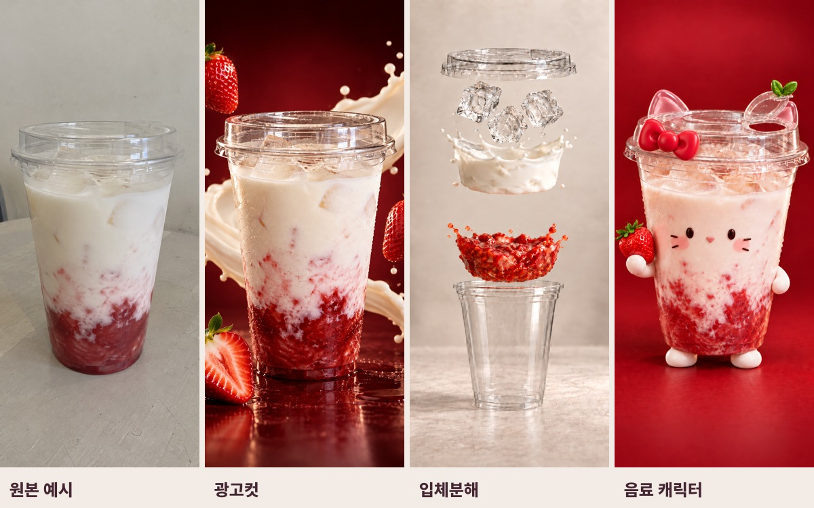

이럴땐 AI · 무료 실습 자료사진 한 장,
명령어 3개로 시작하세요.
광고컷 → 입체분해 → 음료 캐릭터.
사진과 설정문을 같은 대화에 먼저 넣으면 됩니다.

모두 AI 제작 예시입니다. 자료는 무료이며 도구 이용료는 별도입니다.
01 설정문
이 대화에서 첨부한 음료 사진을 원본으로 유지하고 아래 사용자 정의 명령어를 등록해줘. 아직 이미지를 만들지 말고 "설정 완료"라고만 답해줘.
공통: 9:16 세로 이미지 1장. 첨부한 컵의 실루엣과 실제 음료의 색·재료를 유지해줘. 글자·로고·워터마크는 새로 넣지 마. 다른 명령의 결과를 원본으로 사용하지 말고 처음 첨부한 음료를 기준으로 해줘.
/광고컷: 같은 투명컵과 딸기 라테를 유지한 실사 광고 사진. 짙은 버건디 배경, 뒤로 흐르는 자연스러운 우유 리본, 공중의 신선한 딸기, 선명한 컵과 결로, 극적인 스튜디오 조명.
/입체분해: 같은 컵의 뚜껑·얼음·우유·딸기청을 하나의 수직축에서 분리한 실사 광고 이미지. 따뜻한 아이보리 배경, 자연스러운 액체와 조각 질감, 빈 투명컵은 아래. 공중의 액체는 얇은 비정형 곡선과 작은 방울로 표현해줘. 슬라이스·통딸기 장식·딱딱한 원반 형태·다른 컵은 없어야 해.
/캐릭터: 실제 딸기음료가 보이는 투명컵을 유지. 열어 마실 수 있는 뚜껑에 작은 핑크 고양이 귀와 둥근 빨간 리본. 컵에는 작은 오리지널 고양이 표정과 작은 팔다리. 별도 거대 머리 금지. 고급 제품 사진, 버건디 배경. 특정 유명 캐릭터의 얼굴·비율·표식을 복제하지 말고 이 음료만의 개성을 만들어줘.
각 명령을 받으면 긴 설명 없이 해당 이미지 1장만 만들어줘. 내가 다른 음료 사진을 첨부하면 재료와 색은 해당 음료에 맞춰 변경해줘.
02 시작방법
준비물: 내가 사용할 권리가 있는 음료 사진 1장, 이미지 생성이 가능한 ChatGPT 계정.
1. https://chatgpt.com/ 에 접속하고 새 대화를 여세요.
2. 입력창의 + 또는 파일 추가에서 음료 사진을 첨부하세요. 컵 전체가 보이고 배경이 단순한 사진이 좋습니다. 잘린 컵·심한 역광·흐린 사진은 먼저 바꿔주세요.
3. 01_설정문.txt 전체를 같은 입력창에 붙여넣고 전송하세요. "설정 완료" 응답을 확인하세요.
4. 다음 메시지에 /광고컷 만 입력하세요. 이미지가 완성되면 결과를 눌러 다운로드하세요.
5. 같은 대화에서 /입체분해 를 입력하고 생성이 끝난 뒤 저장하세요.
6. 같은 대화에서 /캐릭터 를 입력하세요. 컵이 가려지거나 다른 제품이 되면 아래 수정 문장을 사용하세요.
7. 새 대화로 옮길 때는 사진과 설정문을 다시 넣으세요. 이 슬래시 명령어는 ChatGPT의 기본 내장 기능이 아니라 설정문으로 약속한 단축어입니다.
8. 생성 대기시간을 제외한 명령 입력 화면과 완성 결과를 번갈아 편집하면 영상처럼 보여줄 수 있습니다. 생성 결과·시간·수정 횟수는 매번 달라집니다.
다른 메뉴로 바꾸기: 설정문 속 [딸기 라테 / 버건디 / 딸기청 / 고양이]를 내 음료·배경색·재료·오리지널 캐릭터로 바꾸세요. 예: 말차 라테 / 짙은 녹색 / 말차 / 작은 찻잎 요정.
03 오류수정
컵이 두 개로 겹칠 때
"맨 아래 원래 컵 하나만 남겨줘. 위쪽에 생긴 두 번째 컵과 이중 테두리를 없애줘. 원래 컵의 위치·높이·지름은 바꾸지 마. 뚜껑은 원래 컵 테두리에 정확히 맞춰줘. 다른 부분은 유지해줘."
재료가 원반처럼 딱딱할 때
"우유와 딸기청은 용기 없는 액체야. 동그란 원판·블록 형태를 없애고, 얇게 휘어진 비정형 액체와 작은 방울로 바꿔줘. 얼음은 서로 다른 각도의 조각으로 표현해줘. 컵과 카메라는 그대로 유지해줘."
캐릭터가 음료를 가릴 때
"음료가 주인공이야. 투명컵 내부의 실제 음료를 보여줘. 별도의 큰 머리는 제거하고 작은 표정만 컵에 붙여줘. 귀와 리본은 열 수 있는 뚜껑에 작게 부착해줘."
색과 재료가 바뀔 때
"처음 첨부한 원본과 비교해서 음료 색, 층, 재료, 컵 실루엣만 원래대로 돌려줘. 배경과 조명은 지금 결과를 유지해줘."
움직임이 거꾸로일 때
"시작 프레임은 재료가 떠 있는 분해 상태, 끝은 재료가 담긴 완성 음료야. 모든 재료가 동시에 아래로 모이게 해줘. 액체가 컵에서 올라오는 장면은 없어야 해."
검수는 컵 테두리·바닥·뚜껑부터 보세요. 마음에 드는 결과는 별도 저장한 뒤, 한 번에 한 오류만 고치세요. 같은 프롬프트라도 완전히 동일한 결과를 보장하지 않습니다.
04 영상만들기
영상 속 재료 모션은 정지 이미지를 Higgsfield에서 영상화하고 겹친 컵을 부분 보정한 예시입니다. ChatGPT 명령 하나만으로 이 동영상이 바로 출력되는 것은 아닙니다.
1. /입체분해 결과 중 컵 하나와 자연스러운 액체층이 가장 잘 나온 이미지를 고르세요. 무료자료의 03_입체분해_보정예시.png로도 연습할 수 있습니다.
2. https://higgsfield.ai/ 에서 이미지로 영상 만들기를 여세요. 사용 가능한 모델 중 이미지 입력이 가능한 것을 선택하세요. 이번 제작에는 Kling 3.0 Pro 3초와 컵 부분 보정을 사용했습니다.
3. 이미지를 시작 프레임으로 올리고 아래 영문 명령을 입력하세요. 생성 직전 표시되는 크레딧·길이·모델을 확인하세요. 자료는 무료지만 도구 사용료는 별도입니다. 재생성에도 비용이 들 수 있습니다.
4. 첫 화면에서 모든 재료가 같이 움직이는지, 중간에 두 번째 컵이 생기지 않는지, 마지막 뚜껑이 원래 컵에 닫히는지 확인하세요.
5. 컵만 이상하면 전체를 다시 디자인하지 말고 아래 컵 보정문으로 부분 편집하세요. 수정 기능 지원 여부는 모델마다 다릅니다.
6. 편집에서는 정방향으로 재생하세요. 초반 후킹에는 약 1.18배, 설명 구간에는 1배를 사용한 예시입니다. 사진을 좌우로 흔드는 효과는 필요하지 않습니다.
영상용 명령
Locked camera, one transparent cup fixed on the table. From the supplied exploded view, all floating ingredients begin moving downward together in one cohesive airy motion: lid, ice, milk and strawberry puree. Milk and puree keep natural flowing irregular shapes and small droplets, never rigid round disks. The ingredients settle inside the original cup and the lid closes on its original rim. Keep the exact cup silhouette, position and height. One continuous forward-time take, complete within 2 seconds and hold the finished drink. No upward liquid, no second cup, no extra rim, no added fruit, no strawberry slices, no camera shake or zoom.
컵 부분 보정문
LOCALIZED CUP REPAIR ONLY. Preserve the source video's natural falling milk, flying puree droplets, ice motion, timing, camera and lighting. Remove only the phantom upper cup and duplicate rim. Keep ONE original bottom cup with unchanged silhouette and rim height. Fit the final lid to that original rim. Do not turn liquid ingredients into rigid disks. Keep all other motion as close to the source as possible.
대안: Google Flow https://labs.google/fx/tools/flow 에서도 이미지 기반 영상 기능이 계정에 제공되면 같은 시작 이미지와 영상 명령으로 비교할 수 있습니다. 현재 계정의 무료 제공량·모델·크레딧을 생성 전에 확인하세요. 이 자료에서는 Flow로 같은 결과를 직접 검증하지 않았으며, 무료 무제한 또는 동일 품질을 약속하지 않습니다.
05 자료범위와출처
이 무료자료에 포함된 것
설정문 1개, 명령어 3개, 사진 첨부부터 시작하는 사용법, 오류별 수정 문장 5개, 영상화 명령과 컵 보정문, AI 원본/보정 시안/실행 결과 예시, 짧은 모션 예시.
예시 출처와 실제 제작 범위
원본 예시까지 모두 AI로 만든 이미지입니다. 실제 매장 촬영 사진이나 특정 브랜드 제품 사진이 아닙니다. 본인 사진으로 실습할 때에는 실제 제품과 달라진 재료·양·포장 표현을 확인하세요.
01_원본예시.png: 생성형으로 만든 평범한 음료 사진.
02_광고컷_보정예시.png / 03_입체분해_보정예시.png / 04_캐릭터_보정예시.png: 제작 과정에서 여러 번 수정한 시안.
05_GPT실행_광고컷.png / 06_GPT실행_캐릭터.png: 최종 녹화 대화에서 실제 명령을 입력해 생성한 결과.
재료모션_예시.mp4: 보정한 입체분해 시안을 Higgsfield에서 영상화한 후 컵 겹침을 부분 수정한 결과. 704×1248, 24fps 소스이며 고해상도 원생성 영상으로 표기하지 않습니다.
파일은 이 자료를 받은 본인이 실습·변형 제작하는 데 활용하세요. 타인 로고나 유명 캐릭터를 그대로 복제하는 용도로 설계하지 않았습니다. AI 결과의 독점성이나 권리 비침해를 보증하는 자료는 아닙니다.
전체 제작 대행, 결과와 똑같은 재현 보장, 특정 도구의 무료 이용권, CapCut 원본 프로젝트는 포함되지 않습니다.
제작일: 2026-10-04. 도구 메뉴와 제공 기능은 계정·모델·시점에 따라 달라질 수 있습니다.